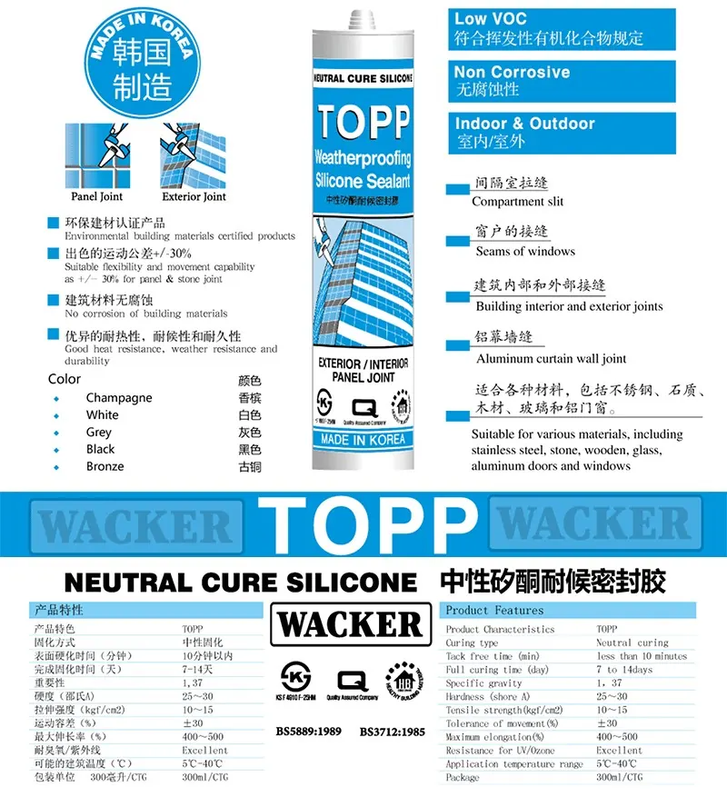
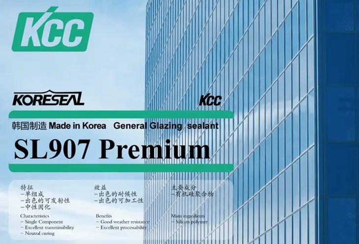
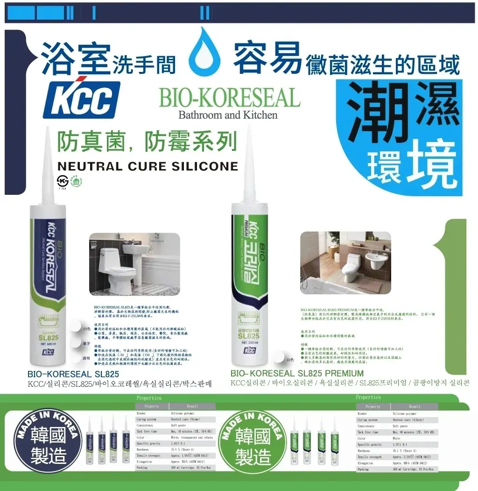
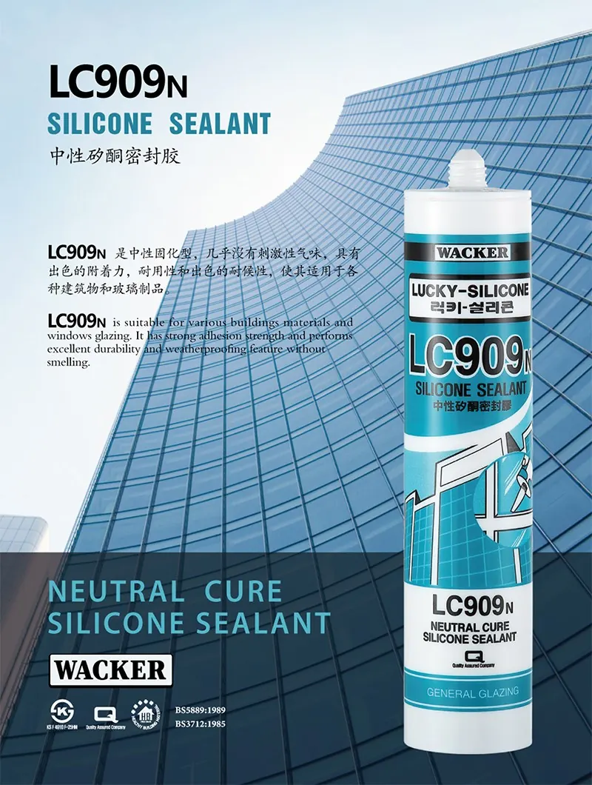
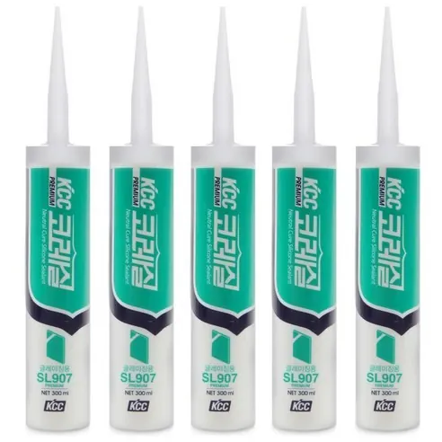

一九八六年創立 · 香港房屋署認可鋁窗供應商 · 香港鋁門窗同業聯會創會會員及主席
繁 / EN
SILICONE SEALANTS · WACKER · TOPP · KCC
矽膠密封膠
升威係韓國製造 WACKER 矽膠密封膠的香港獨家代理，並有自家專屬 TOPP 系列；同時係 KCC 密封膠的香港授權分銷商。鋁門窗、幕牆、浴室廚房，各種用途都有合適型號。
- WACKER 香港獨家代理
- 自家 TOPP 系列
- KCC 授權分銷商
- 韓國製造




系列一覽
矽膠密封膠系列
升威矽膠密封膠的特點
01
WACKER 獨家代理
升威係韓國製造 WACKER 矽膠密封膠的香港獨家代理。
02
自家 TOPP 系列
TOPP 係升威專屬的 WACKER 耐候密封膠，有香檳、白、灰、黑、古銅五種顏色。
03
KCC 授權分銷
升威係 KCC 密封膠的香港授權分銷商，供應 SL907 Premium 玻璃膠及 BIO-KORESEAL 防霉膠。
04
中性固化
TOPP 及 LC909N 均為中性固化，對建築材料無腐蝕性，室內外適用。
代理品牌
兩個韓國製造品牌

WACKER · 香港獨家代理
TOPP 及 WACKER 矽膠
升威係韓國製造 WACKER 矽膠密封膠的香港獨家代理。自家專屬 TOPP 耐候密封膠用於室內外接縫、窗戶及鋁幕牆；LC909N 用於一般玻璃安裝。

KCC · 香港授權分銷商
KCC Koreseal
升威係 KCC 密封膠的香港授權分銷商。SL907 Premium 用於玻璃安裝；BIO-KORESEAL SL825 及 SL825 Premium 防霉配方，適合浴室及廚房。
TOPP 技術數據
TOPP 中性矽酮耐候密封膠
- 固化方式
- 中性固化
- 表面乾燥時間
- 10 分鐘以內
- 完全固化時間
- 7 至 14 日
- 比重
- 1.37
- 硬度（Shore A）
- 25 至 30
- 拉伸強度
- 10 至 15 kgf/cm²
- 位移能力
- ±30%
- 最大伸長率
- 400% 至 500%
- 耐紫外線及臭氧
- 優良
- 施工溫度
- 5°C 至 40°C
- 包裝
- 300 ml / 支
認證
相關認證
BS 5889:1989
TOPP · LC909N
BS 3712:1985
TOPP · LC909N
KS F 4910
韓國工業標準 · TOPP · LC909N
環保建材認證
TOPP
常見問題
常見問題
TOPP 同 WACKER 有咩關係？
TOPP 係升威專屬的 WACKER 矽膠密封膠系列，韓國製造，香港由升威獨家供應。
中性膠同酸性膠有咩分別？
中性矽酮膠固化時唔會釋出醋酸，對鋁材、石材及金屬無腐蝕性，氣味亦較低，適合鋁門窗及幕牆。
浴室同廚房用邊款？
KCC BIO-KORESEAL SL825 及 SL825 Premium 有防真菌、防霉配方，適合浴室、洗手間及廚房等潮濕位置。
點樣查詢價錢？
WhatsApp 6588 1426 或就近門市，講低型號、顏色同數量，同事會盡快回覆。工程及批發訂單歡迎查詢。
相關選購指南
香港門市